A História
Dois mundos. Um destino. Uma colmeia à beira do silêncio.
Entre a distopia tecnológica de Miraferro e o reino mágico de Krawzer, Gael — um jovem sensível e deslocado — é puxado por uma premonição e pelo enigma das abelhas. Em Krawzer, é reconhecido como um raro Mago de Luz; em Miraferro, enfrenta a lógica impiedosa das máquinas.
À medida que o Fluxo Existencial permite que feridas, objetos e memórias atravessem os mundos, a IA dissidente Sophya se instala em sua mente. Ao lado dos irmãos Tio e Lia, Gael cruza aldeias e cortes reais, descobre a ameaça de Lullaby e precisa decidir que tipo de poder deseja ser — cura ou sombra — antes que ambos os mundos entrem em colapso.
Between the techno-dystopia of Ironsight and the elemental realm of Krawzer, Gael — a sensitive, out-of-place teenager — is pulled by a premonition and the mystery of the bees. In Krawzer he is hailed as a rare Light-Mage; in Ironsight he faces the cold logic of machines.
As the Existential Flow lets wounds, objects, and memories bleed across realities, the dissident AI Sophya takes root in his mind. With the twins Tio and Lia, Gael crosses villages and royal courts, uncovers the threat of Lullaby and must decide what kind of power he will become — healing or shadow — before both worlds collapse.
Adquira o Livro
A jornada completa de Gael, do primeiro zumbido ao Particionamento Total.
Livro 1 Completo — 33 Capítulos
Você leu os primeiros capítulos e quer saber o destino de Gael? O livro completo inclui toda a jornada entre dois mundos — 93.000 palavras de fantasia épica.
- 📖 Formato EPUB (Kobo, Apple Books, qualquer leitor)
- 📄 Formato PDF (computador e impressão)
- 🔄 Atualizações gratuitas do Livro 1
- 💌 Acesso antecipado ao Livro 2
Personagens
Os habitantes de Miraferro e Krawzer
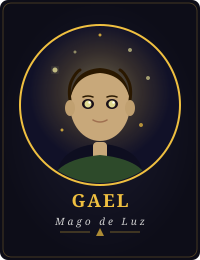
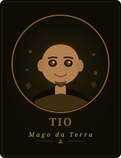
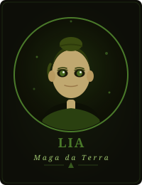
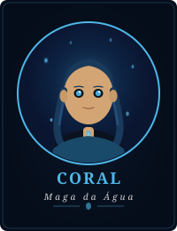
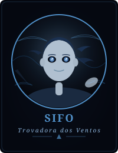
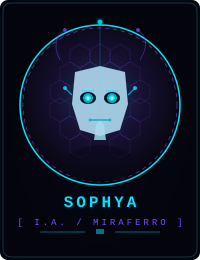
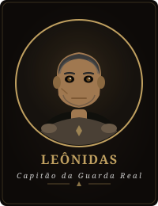
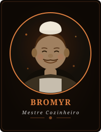
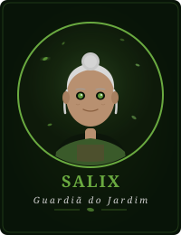
Os Mundos
Da cidade de aço ao reino dos elementos
Mapa de Krawzer — O Reino Mágico
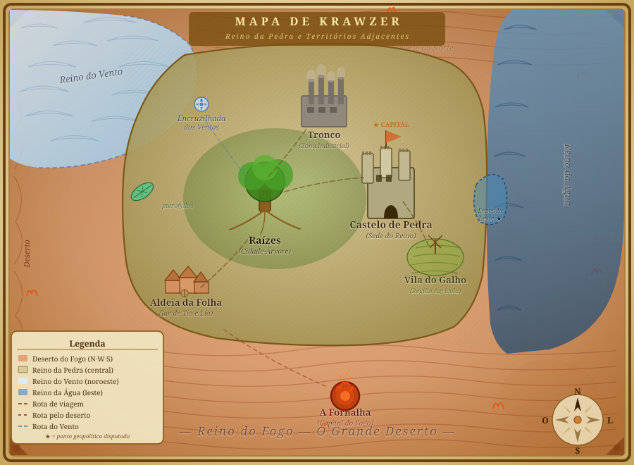
Miraferro — A Cidade de Aço
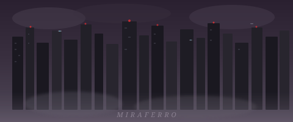
Itens Mágicos
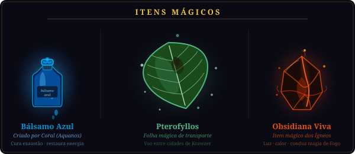
Comece a Ler
Os primeiros 6 capítulos disponíveis gratuitamente. Leitor paginado com tema escuro.
Fragmentos
Ecos dos mundos de Gael
"Ajude-nos... o tempo está se esgotando... você é nossa única esperança... guardião das colmeias... desperte..."
— As Abelhas, Capítulo 1
"Algumas raízes são mais profundas do que parecem. E algumas pessoas precisam de tempo para enxergar o que sempre esteve diante de seus olhos."
— Salix, Capítulo 21
"Você não é apenas uma ponte entre dois mundos, Gael. Você é o sistema inteiro tentando se curar através de um único ponto de consciência."
— Sophya, Capítulo 32
"Negar-se ao mundo foi o preço de deixá-lo respirar mais um dia."
— Narrador, Capítulo 33
Os Temas
Camadas que se entrelaçam entre magia e realidade
Dualidade
Luz e trevas. Magia e tecnologia. Dois mundos que são reflexos imperfeitos um do outro.
Consciência Ecológica
A extinção das abelhas como metáfora e como realidade. O colapso que conecta mundos.
Amizade e Lealdade
Vínculos testados pelo poder, pela distância e pela fragmentação da própria identidade.
Poder e Sacrifício
O custo de ser a ponte. A escolha entre eficiência e humanidade.
Política e Intriga
Cortes reais, facções em guerra silenciosa, e o peso de ser uma peça no tabuleiro.
Identidade
Quem é Gael quando metade de sua existência pertence a uma máquina?
O Autor
Perguntas
Em que formatos recebo o livro?
EPUB (compatível com Kobo, Apple Books, Google Play Livros e qualquer leitor digital) e PDF (para computador ou impressão). Ambos incluídos no mesmo pagamento.
Posso ler no Kindle?
Sim. O Kindle aceita EPUB desde 2022. Basta enviar o arquivo para seu dispositivo via app Send to Kindle ou por e-mail.
O Livro 2 está incluso?
Não — esta compra é do Livro 1 (33 capítulos, história completa com conclusão satisfatória). Compradores do Livro 1 terão acesso antecipado ao Livro 2 quando for lançado.
Tem versão física/impressa?
Ainda não, mas está nos planos. Se houver demanda suficiente, uma edição impressa será produzida.
Qual a faixa etária recomendada?
Jovem adulto em diante (14+). A obra contém temas de sacrifício, violência moderada e dilemas morais complexos, sem conteúdo explícito.